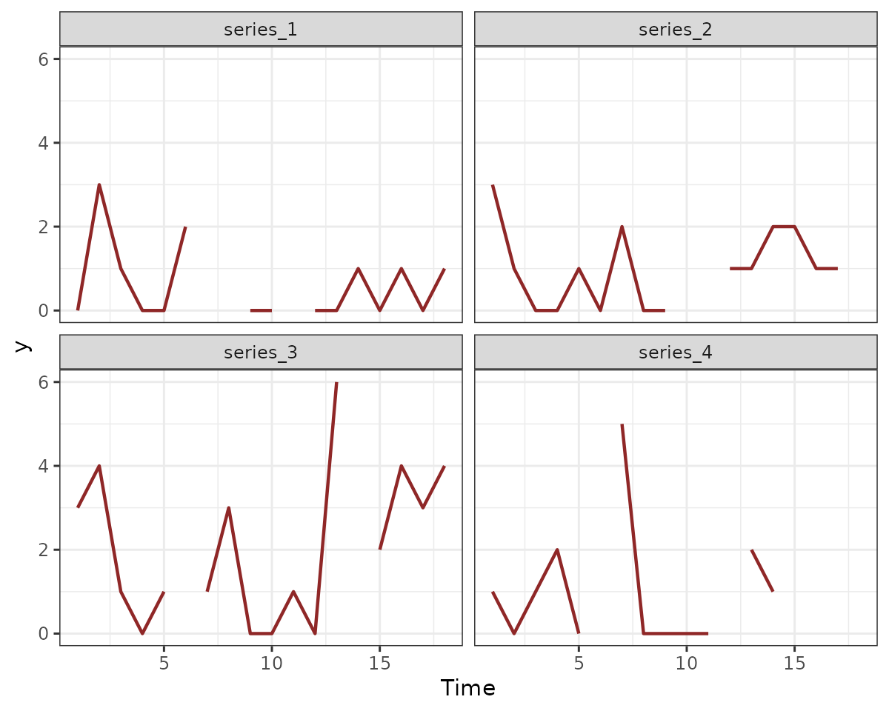
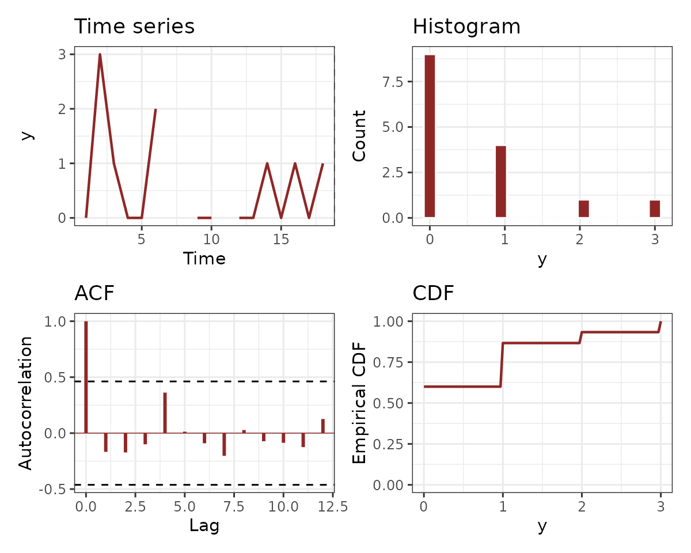
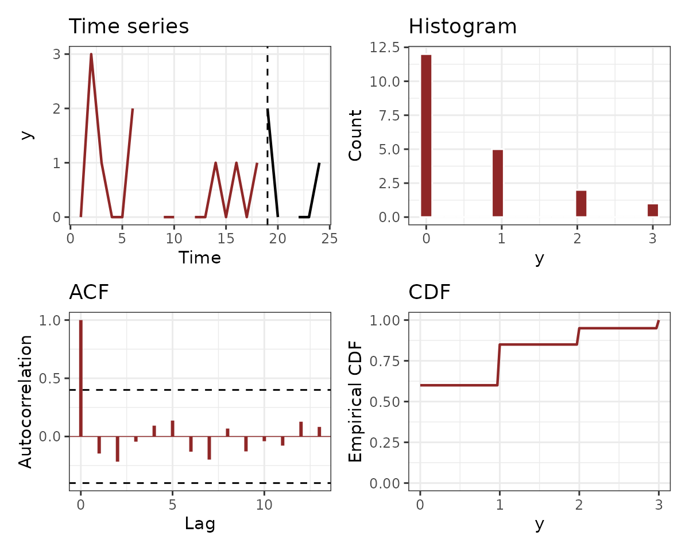

Formatting data for use in mvgam
Nicholas J Clark
2025-03-29
Source:vignettes/data_in_mvgam.Rmd
data_in_mvgam.RmdThis vignette gives an example of how to take raw data and format it
for use in mvgam. This is not an exhaustive example, as
data can be recorded and stored in a variety of ways, which requires
different approaches to wrangle the data into the necessary format for
mvgam. For full details on the basic mvgam
functionality, please see the
introductory vignette and the
growing set of walk through video tutorials on mvgam
applications.
Required tidy data format
Manipulating the data into a ‘long’ format (i.e. tidy
format) is necessary for modelling in mvgam. By ‘long’
format, we mean that each series x time observation needs
to have its own entry in the dataframe or list
object that we wish to pass as data for to the two primary modelling
functions, mvgam() and jsdgam(). A simple
example can be viewed by simulating data using the
sim_mvgam() function. See ?sim_mvgam for more
details
simdat <- sim_mvgam(
n_series = 4,
T = 24,
prop_missing = 0.2
)
head(simdat$data_train, 16)
#> y season year series time
#> 1 0 1 1 series_1 1
#> 2 3 1 1 series_2 1
#> 3 3 1 1 series_3 1
#> 4 1 1 1 series_4 1
#> 5 3 2 1 series_1 2
#> 6 1 2 1 series_2 2
#> 7 4 2 1 series_3 2
#> 8 0 2 1 series_4 2
#> 9 1 3 1 series_1 3
#> 10 0 3 1 series_2 3
#> 11 1 3 1 series_3 3
#> 12 1 3 1 series_4 3
#> 13 0 4 1 series_1 4
#> 14 0 4 1 series_2 4
#> 15 0 4 1 series_3 4
#> 16 2 4 1 series_4 4
series as a factor variable
Notice how we have four different time series in these simulated
data, and we have identified the series-level indicator as a
factor variable.
class(simdat$data_train$series)
#> [1] "factor"
levels(simdat$data_train$series)
#> [1] "series_1" "series_2" "series_3" "series_4"It is important that the number of levels matches the number of
unique series in the data to ensure indexing across series works
properly in the underlying modelling functions. Several of the main
workhorse functions in the package (including mvgam() and
get_mvgam_priors()) will give an error if this is not the
case, but it may be worth checking anyway:
Note that you can technically supply data that does not have a
series indicator, and the package will generally assume
that you are only using a single time series. There are exceptions to
this, for example if you have grouped data and would like to estimate
hierarchical dependencies (see an example of hierarchical process error
correlations in the ?AR documentation) or if you would like
to set up a Joint Species Distribution Model (JSDM) using a Zero-Mean
Multivariate Gaussian distribution for the latent residuals (see
examples in the ?ZMVN documentation).
A single outcome variable
You may also have notices that we do not spread the
numeric / integer-classed outcome variable into different
columns. Rather, there is only a single column for the outcome variable,
labelled y in these simulated data (though the outcome does
not have to be labelled y). This is another important
requirement in mvgam, but it shouldn’t be too unfamiliar to
R users who frequently use modelling packages such as
lme4, mgcv, brms or the many
other regression modelling packages out there. The advantage of this
format is that it is now very easy to specify effects that vary among
time series:
summary(glm(
y ~ series + time,
data = simdat$data_train,
family = poisson()
))
#>
#> Call:
#> glm(formula = y ~ series + time, family = poisson(), data = simdat$data_train)
#>
#> Coefficients:
#> Estimate Std. Error z value Pr(>|z|)
#> (Intercept) -0.63755 0.40343 -1.580 0.114037
#> seriesseries_2 0.52233 0.42213 1.237 0.215949
#> seriesseries_3 1.23795 0.37608 3.292 0.000996 ***
#> seriesseries_4 0.45028 0.43429 1.037 0.299822
#> time 0.01284 0.02257 0.569 0.569442
#> ---
#> Signif. codes: 0 '***' 0.001 '**' 0.01 '*' 0.05 '.' 0.1 ' ' 1
#>
#> (Dispersion parameter for poisson family taken to be 1)
#>
#> Null deviance: 101.652 on 59 degrees of freedom
#> Residual deviance: 86.252 on 55 degrees of freedom
#> (12 observations deleted due to missingness)
#> AIC: 182.44
#>
#> Number of Fisher Scoring iterations: 5
summary(mgcv::gam(
y ~ series + s(time, by = series),
data = simdat$data_train,
family = poisson()
))
#>
#> Family: poisson
#> Link function: log
#>
#> Formula:
#> y ~ series + s(time, by = series)
#>
#> Parametric coefficients:
#> Estimate Std. Error z value Pr(>|z|)
#> (Intercept) -0.5484 0.3456 -1.587 0.11258
#> seriesseries_2 0.5130 0.4357 1.177 0.23903
#> seriesseries_3 1.1818 0.3934 3.004 0.00266 **
#> seriesseries_4 -21.5347 110.5452 -0.195 0.84555
#> ---
#> Signif. codes: 0 '***' 0.001 '**' 0.01 '*' 0.05 '.' 0.1 ' ' 1
#>
#> Approximate significance of smooth terms:
#> edf Ref.df Chi.sq p-value
#> s(time):seriesseries_1 1.135 1.258 0.948 0.3480
#> s(time):seriesseries_2 2.186 2.715 2.786 0.4972
#> s(time):seriesseries_3 2.464 3.048 7.190 0.0676 .
#> s(time):seriesseries_4 7.834 7.986 5.992 0.6466
#> ---
#> Signif. codes: 0 '***' 0.001 '**' 0.01 '*' 0.05 '.' 0.1 ' ' 1
#>
#> R-sq.(adj) = 0.387 Deviance explained = 51.4%
#> UBRE = 0.41091 Scale est. = 1 n = 60Depending on the observation families you plan to use when building
models, there may be some restrictions that need to be satisfied within
the outcome variable. For example, a Beta regression can only handle
proportional data, so values >= 1 or
<= 0 are not allowed. Likewise, a Poisson regression can
only handle non-negative integers. Most regression functions in
R will assume the user knows all of this and so will not
issue any warnings or errors if you choose the wrong distribution, but
often this ends up leading to some unhelpful error from an optimizer
that is difficult to interpret and diagnose. mvgam will
attempt to provide some errors if you do something that is simply not
allowed. For example, we can simulate data from a zero-centred Gaussian
distribution (ensuring that some of our values will be
< 1) and attempt a Beta regression in mvgam
using the betar family:
gauss_dat <- data.frame(
outcome = rnorm(10),
series = factor("series1",
levels = "series1"
),
time = 1:10
)
gauss_dat
#> outcome series time
#> 1 -0.314772157 series1 1
#> 2 -0.005381841 series1 2
#> 3 -1.358302802 series1 3
#> 4 1.572927578 series1 4
#> 5 -1.199384161 series1 5
#> 6 -0.072655731 series1 6
#> 7 -0.024083976 series1 7
#> 8 1.584497498 series1 8
#> 9 0.005675627 series1 9
#> 10 -0.648204484 series1 10A call to gam() using the mgcv package
leads to a model that actually fits (though it does give an unhelpful
warning message):
mgcv::gam(outcome ~ time,
family = betar(),
data = gauss_dat
)
#>
#> Family: Beta regression(0.084)
#> Link function: logit
#>
#> Formula:
#> outcome ~ time
#> Total model degrees of freedom 2
#>
#> REML score: -237.6676But the same call to mvgam() gives us something more
useful:
mvgam(outcome ~ time,
family = betar(),
data = gauss_dat
)
#> Error: Values <= 0 not allowed for beta responsesPlease see ?mvgam_families for more information on the
types of responses that the package can handle and their
restrictions
A time variable
The other requirement for most models that can be fit in
mvgam is a numeric / integer-classed variable
labelled time. This ensures the modelling software knows
how to arrange the time series when building models. This setup still
allows us to formulate multivariate time series models. If you plan to
use any of the autoregressive dynamic trend functions available in
mvgam (see ?mvgam_trends for details of
available dynamic processes), you will need to ensure your time series
are entered with a fixed sampling interval (i.e. the time between
timesteps 1 and 2 should be the same as the time between timesteps 2 and
3, etc…). But note that you can have missing observations for some (or
all) series. mvgam() will check this for you, but again it
is useful to ensure you have no missing timepoint x series combinations
in your data. You can generally do this with a simple dplyr
call:
# A function to ensure all timepoints within a sequence are identical
all_times_avail <- function(time, min_time, max_time) {
identical(
as.numeric(sort(time)),
as.numeric(seq.int(from = min_time, to = max_time))
)
}
# Get min and max times from the data
min_time <- min(simdat$data_train$time)
max_time <- max(simdat$data_train$time)
# Check that all times are recorded for each series
data.frame(
series = simdat$data_train$series,
time = simdat$data_train$time
) %>%
dplyr::group_by(series) %>%
dplyr::summarise(all_there = all_times_avail(
time,
min_time,
max_time
)) -> checked_times
if (any(checked_times$all_there == FALSE)) {
warning("One or more series in is missing observations for one or more timepoints")
} else {
cat("All series have observations at all timepoints :)")
}
#> All series have observations at all timepoints :)Note that models which use dynamic components will assume that
smaller values of time are older
(i.e. time = 1 came before time = 2,
etc…)
Irregular sampling intervals?
Most mvgam dynamic trend models expect time
to be measured in discrete, evenly-spaced intervals (i.e. one
measurement per week, or one per year, for example; though missing
values are allowed). But please note that irregularly sampled time
intervals are allowed, in which case the CAR() trend model
(continuous time autoregressive) is appropriate. You can see an example
of this kind of model in the Examples section in
?CAR. You can also use trend_model = 'None'
(the default in mvgam()) and instead use a Gaussian Process
to model temporal variation for irregularly-sampled time series. See the
?brms::gp for details. But to reiterate the point from
above, if you do not have time series data (or don’t want to estimate
latent temporal dynamics) but you would like to estimate correlated
latent residuals among multivariate outcomes, you can set up models that
use trend_model = ZMVN(...) without the need for a
time variable (see ?ZMVN for details).
Checking data with get_mvgam_priors()
The get_mvgam_priors() function is designed to return
information about the parameters in a model whose prior distributions
can be modified by the user. But in doing so, it will perform a series
of checks to ensure the data are formatted properly. It can therefore be
very useful to new users for ensuring there isn’t anything strange going
on in the data setup. For example, we can replicate the steps taken
above (to check factor levels and timepoint x series combinations) with
a single call to get_mvgam_priors(). Here we first simulate
some data in which some of the timepoints in the time
variable are not included in the data:
bad_times <- data.frame(
time = seq(1, 16, by = 2),
series = factor("series_1"),
outcome = rnorm(8)
)
bad_times
#> time series outcome
#> 1 1 series_1 1.85866321
#> 2 3 series_1 0.82830318
#> 3 5 series_1 1.19903527
#> 4 7 series_1 0.60005124
#> 5 9 series_1 0.05876012
#> 6 11 series_1 -1.28976353
#> 7 13 series_1 -0.12633386
#> 8 15 series_1 0.38398762Next we call get_mvgam_priors() by simply specifying an
intercept-only model, which is enough to trigger all the checks:
get_mvgam_priors(outcome ~ 1,
data = bad_times,
family = gaussian()
)
#> Error: One or more series in data is missing observations for one or more timepointsThis error is useful as it tells us where the problem is. There are
many ways to fill in missing timepoints, so the correct way will have to
be left up to the user. But if you don’t have any covariates, it should
be pretty easy using expand.grid():
bad_times %>%
dplyr::right_join(expand.grid(
time = seq(
min(bad_times$time),
max(bad_times$time)
),
series = factor(unique(bad_times$series),
levels = levels(bad_times$series)
)
)) %>%
dplyr::arrange(time) -> good_times
good_times
#> time series outcome
#> 1 1 series_1 1.85866321
#> 2 2 series_1 NA
#> 3 3 series_1 0.82830318
#> 4 4 series_1 NA
#> 5 5 series_1 1.19903527
#> 6 6 series_1 NA
#> 7 7 series_1 0.60005124
#> 8 8 series_1 NA
#> 9 9 series_1 0.05876012
#> 10 10 series_1 NA
#> 11 11 series_1 -1.28976353
#> 12 12 series_1 NA
#> 13 13 series_1 -0.12633386
#> 14 14 series_1 NA
#> 15 15 series_1 0.38398762Now the call to get_mvgam_priors(), using our filled in
data, should work:
get_mvgam_priors(outcome ~ 1,
data = good_times,
family = gaussian()
)
#> param_name param_length param_info
#> 1 (Intercept) 1 (Intercept)
#> 2 vector<lower=0>[n_series] sigma_obs; 1 observation error sd
#> prior example_change
#> 1 (Intercept) ~ student_t(3, 0.5, 2.5); (Intercept) ~ normal(0, 1);
#> 2 sigma_obs ~ inv_gamma(1.418, 0.452); sigma_obs ~ normal(0.77, 0.45);
#> new_lowerbound new_upperbound
#> 1 NA NA
#> 2 NA NAThis function should also pick up on misaligned factor levels for the
series variable. We can check this by again simulating,
this time adding an additional factor level that is not included in the
data:
bad_levels <- data.frame(
time = 1:8,
series = factor("series_1",
levels = c(
"series_1",
"series_2"
)
),
outcome = rnorm(8)
)
levels(bad_levels$series)
#> [1] "series_1" "series_2"Another call to get_mvgam_priors() brings up a useful
error:
get_mvgam_priors(outcome ~ 1,
data = bad_levels,
family = gaussian()
)
#> Error: Mismatch between factor levels of "series" and unique values of "series"
#> Use
#> `setdiff(levels(data$series), unique(data$series))`
#> and
#> `intersect(levels(data$series), unique(data$series))`
#> for guidanceFollowing the message’s advice tells us there is a level for
series_2 in the series variable, but there are
no observations for this series in the data:
Re-assigning the levels fixes the issue:
bad_levels %>%
dplyr::mutate(series = droplevels(series)) -> good_levels
levels(good_levels$series)
#> [1] "series_1"
get_mvgam_priors(
outcome ~ 1,
data = good_levels,
family = gaussian()
)
#> param_name param_length param_info
#> 1 (Intercept) 1 (Intercept)
#> 2 vector<lower=0>[n_series] sigma_obs; 1 observation error sd
#> prior example_change
#> 1 (Intercept) ~ student_t(3, 0, 2.5); (Intercept) ~ normal(0, 1);
#> 2 sigma_obs ~ inv_gamma(1.418, 0.452); sigma_obs ~ normal(0.12, 0.87);
#> new_lowerbound new_upperbound
#> 1 NA NA
#> 2 NA NACovariates with no NAs
Covariates can be used in models just as you would when using
mgcv (see ?formula.gam for details of the
formula syntax). But although the outcome variable can have
NAs, covariates cannot. Most regression software will
silently drop any raws in the model matrix that have NAs,
which is not helpful when debugging. Both the mvgam() and
get_mvgam_priors() functions will run some simple checks
for you, and hopefully will return useful errors if it finds in missing
values:
miss_dat <- data.frame(
outcome = rnorm(10),
cov = c(NA, rnorm(9)),
series = factor("series1",
levels = "series1"
),
time = 1:10
)
miss_dat
#> outcome cov series time
#> 1 -1.43332110 NA series1 1
#> 2 -0.01030332 -2.177576028 series1 2
#> 3 -0.21223603 -0.117860143 series1 3
#> 4 -0.90634018 0.112294787 series1 4
#> 5 -2.10215248 0.007886198 series1 5
#> 6 1.89336046 1.877743872 series1 6
#> 7 -0.96812584 2.158756554 series1 7
#> 8 -0.10260304 0.709714522 series1 8
#> 9 0.23995957 0.766983379 series1 9
#> 10 0.06089889 -0.308211421 series1 10
get_mvgam_priors(
outcome ~ cov,
data = miss_dat,
family = gaussian()
)
#> param_name param_length param_info
#> 1 (Intercept) 1 (Intercept)
#> 2 cov 1 cov fixed effect
#> 3 vector<lower=0>[n_series] sigma_obs; 1 observation error sd
#> prior example_change
#> 1 (Intercept) ~ student_t(3, -0.2, 2.5); (Intercept) ~ normal(0, 1);
#> 2 cov ~ student_t(3, 0, 2); cov ~ normal(0, 1);
#> 3 sigma_obs ~ inv_gamma(1.418, 0.452); sigma_obs ~ normal(-0.3, 0.11);
#> new_lowerbound new_upperbound
#> 1 NA NA
#> 2 NA NA
#> 3 NA NAJust like with the mgcv package, mvgam can
also accept data as a list object. This is useful if you
want to set up linear
functional predictors or even distributed lag predictors. The checks
run by mvgam should still work on these data. Here we
change the cov predictor to be a matrix:
miss_dat <- list(
outcome = rnorm(10),
series = factor("series1",
levels = "series1"
),
time = 1:10
)
miss_dat$cov <- matrix(rnorm(50), ncol = 5, nrow = 10)
miss_dat$cov[2, 3] <- NAA call to get_mvgam_priors() returns the same error:
get_mvgam_priors(
outcome ~ cov,
data = miss_dat,
family = gaussian()
)
#> param_name param_length param_info
#> 1 (Intercept) 1 (Intercept)
#> 2 cov1 1 cov1 fixed effect
#> 3 cov2 1 cov2 fixed effect
#> 4 cov3 1 cov3 fixed effect
#> 5 cov4 1 cov4 fixed effect
#> 6 cov5 1 cov5 fixed effect
#> 7 vector<lower=0>[n_series] sigma_obs; 1 observation error sd
#> prior example_change
#> 1 (Intercept) ~ student_t(3, 0.2, 2.5); (Intercept) ~ normal(0, 1);
#> 2 cov1 ~ student_t(3, 0, 2); cov1 ~ normal(0, 1);
#> 3 cov2 ~ student_t(3, 0, 2); cov2 ~ normal(0, 1);
#> 4 cov3 ~ student_t(3, 0, 2); cov3 ~ normal(0, 1);
#> 5 cov4 ~ student_t(3, 0, 2); cov4 ~ normal(0, 1);
#> 6 cov5 ~ student_t(3, 0, 2); cov5 ~ normal(0, 1);
#> 7 sigma_obs ~ inv_gamma(1.418, 0.452); sigma_obs ~ normal(-0.61, 0.83);
#> new_lowerbound new_upperbound
#> 1 NA NA
#> 2 NA NA
#> 3 NA NA
#> 4 NA NA
#> 5 NA NA
#> 6 NA NA
#> 7 NA NAPlotting with plot_mvgam_series()
Plotting the data is a useful way to ensure everything looks ok, once
you’ve gone throug the above checks on factor levels and timepoint x
series combinations. The plot_mvgam_series() function will
take supplied data and plot either a series of line plots (if you choose
series = 'all') or a set of plots to describe the
distribution for a single time series. For example, to plot all of the
time series in our data, and highlight a single series in each plot, we
can use:
plot_mvgam_series(
data = simdat$data_train,
y = "y",
series = "all"
)
Or we can look more closely at the distribution for the first time series:
plot_mvgam_series(
data = simdat$data_train,
y = "y",
series = 1
)
If you have split your data into training and testing folds (i.e. for forecast evaluation), you can include the test data in your plots:
plot_mvgam_series(
data = simdat$data_train,
newdata = simdat$data_test,
y = "y",
series = 1
)
Example with NEON tick data
To give one example of how data can be reformatted for
mvgam modelling, we will use observations from the National
Ecological Observatory Network (NEON) tick drag cloth samples.
Ixodes scapularis is a widespread tick species capable of
transmitting a diversity of parasites to animals and humans, many of
which are zoonotic. Due to the medical and ecological importance of this
tick species, a common goal is to understand factors that influence
their abundances. The NEON field team carries out standardised long-term monitoring of tick abundances as well as other
important indicators of ecological change. Nymphal abundance of
I. scapularis is routinely recorded across NEON plots using a
field sampling method called drag cloth sampling, which is a common
method for sampling ticks in the landscape. Field researchers sample
ticks by dragging a large cloth behind themselves through terrain that
is suspected of harboring ticks, usually working in a grid-like pattern.
The sites have been sampled since 2014, resulting in a rich dataset of
nymph abundance time series. These tick time series show strong
seasonality and incorporate many of the challenging features associated
with ecological data including overdispersion, high proportions of
missingness and irregular sampling in time, making them useful for
exploring the utility of dynamic GAMs.
We begin by loading NEON tick data for the years 2014 - 2021, which
were downloaded from NEON and prepared as described in Clark & Wells 2022. You can read a bit about the
data using the call ?all_neon_tick_data
data("all_neon_tick_data")
str(dplyr::ungroup(all_neon_tick_data))
#> tibble [3,505 × 24] (S3: tbl_df/tbl/data.frame)
#> $ Year : num [1:3505] 2015 2015 2015 2015 2015 ...
#> $ epiWeek : chr [1:3505] "37" "38" "39" "40" ...
#> $ yearWeek : chr [1:3505] "201537" "201538" "201539" "201540" ...
#> $ plotID : chr [1:3505] "BLAN_005" "BLAN_005" "BLAN_005" "BLAN_005" ...
#> $ siteID : chr [1:3505] "BLAN" "BLAN" "BLAN" "BLAN" ...
#> $ nlcdClass : chr [1:3505] "deciduousForest" "deciduousForest" "deciduousForest" "deciduousForest" ...
#> $ decimalLatitude : num [1:3505] 39.1 39.1 39.1 39.1 39.1 ...
#> $ decimalLongitude : num [1:3505] -78 -78 -78 -78 -78 ...
#> $ elevation : num [1:3505] 168 168 168 168 168 ...
#> $ totalSampledArea : num [1:3505] 162 NA NA NA 162 NA NA NA NA 164 ...
#> $ amblyomma_americanum: num [1:3505] NA NA NA NA NA NA NA NA NA NA ...
#> $ ixodes_scapularis : num [1:3505] 2 NA NA NA 0 NA NA NA NA 0 ...
#> $ time : Date[1:3505], format: "2015-09-13" "2015-09-20" ...
#> $ RHMin_precent : num [1:3505] NA NA NA NA NA NA NA NA NA NA ...
#> $ RHMin_variance : num [1:3505] NA NA NA NA NA NA NA NA NA NA ...
#> $ RHMax_precent : num [1:3505] NA NA NA NA NA NA NA NA NA NA ...
#> $ RHMax_variance : num [1:3505] NA NA NA NA NA NA NA NA NA NA ...
#> $ airTempMin_degC : num [1:3505] NA NA NA NA NA NA NA NA NA NA ...
#> $ airTempMin_variance : num [1:3505] NA NA NA NA NA NA NA NA NA NA ...
#> $ airTempMax_degC : num [1:3505] NA NA NA NA NA NA NA NA NA NA ...
#> $ airTempMax_variance : num [1:3505] NA NA NA NA NA NA NA NA NA NA ...
#> $ soi : num [1:3505] -18.4 -17.9 -23.5 -28.4 -25.9 ...
#> $ cum_sdd : num [1:3505] 173 173 173 173 173 ...
#> $ cum_gdd : num [1:3505] 1129 1129 1129 1129 1129 ...For this exercise, we will use the epiWeek variable as
an index of seasonality, and we will only work with observations from a
few sampling plots (labelled in the plotID column):
plotIDs <- c(
"SCBI_013", "SCBI_002",
"SERC_001", "SERC_005",
"SERC_006", "SERC_012",
"BLAN_012", "BLAN_005"
)Now we can select the target species we want (I.
scapularis), filter to the correct plot IDs and convert the
epiWeek variable from character to
numeric:
model_dat <- all_neon_tick_data %>%
dplyr::ungroup() %>%
dplyr::mutate(target = ixodes_scapularis) %>%
dplyr::filter(plotID %in% plotIDs) %>%
dplyr::select(Year, epiWeek, plotID, target) %>%
dplyr::mutate(epiWeek = as.numeric(epiWeek))Now is the tricky part: we need to fill in missing observations with
NAs. The tick data are sparse in that field observers do
not go out and sample in each possible epiWeek. So there
are many particular weeks in which observations are not included in the
data. But we can use expand.grid() again to take care of
this:
model_dat %>%
# Create all possible combos of plotID, Year and epiWeek;
# missing outcomes will be filled in as NA
dplyr::full_join(expand.grid(
plotID = unique(model_dat$plotID),
Year = unique(model_dat$Year),
epiWeek = seq(1, 52)
)) %>%
# left_join back to original data so plotID and siteID will
# match up, in case you need the siteID for anything else later on
dplyr::left_join(all_neon_tick_data %>%
dplyr::select(siteID, plotID) %>%
dplyr::distinct()) -> model_datCreate the series variable needed for mvgam
modelling:
model_dat %>%
dplyr::mutate(
series = plotID,
y = target
) %>%
dplyr::mutate(
siteID = factor(siteID),
series = factor(series)
) %>%
dplyr::select(-target, -plotID) %>%
dplyr::arrange(Year, epiWeek, series) -> model_datNow create the time variable, which needs to track
Year and epiWeek for each unique series. The
n function from dplyr is often useful if
generating a time index for grouped dataframes:
model_dat %>%
dplyr::ungroup() %>%
dplyr::group_by(series) %>%
dplyr::arrange(Year, epiWeek) %>%
dplyr::mutate(time = seq(1, dplyr::n())) %>%
dplyr::ungroup() -> model_datCheck factor levels for the series:
levels(model_dat$series)
#> [1] "BLAN_005" "BLAN_012" "SCBI_002" "SCBI_013" "SERC_001" "SERC_005" "SERC_006"
#> [8] "SERC_012"This looks good, as does a more rigorous check using
get_mvgam_priors():
get_mvgam_priors(
y ~ 1,
data = model_dat,
family = poisson()
)
#> param_name param_length param_info prior
#> 1 (Intercept) 1 (Intercept) (Intercept) ~ student_t(3, -2.3, 2.5);
#> example_change new_lowerbound new_upperbound
#> 1 (Intercept) ~ normal(0, 1); NA NAWe can also set up a model in mvgam() but use
run_model = FALSE to further ensure all of the necessary
steps for creating the modelling code and objects will run. It is
recommended that you use the cmdstanr backend if possible,
as the auto-formatting options available in this package are very useful
for checking the package-generated Stan code for any
inefficiencies that can be fixed to lead to sampling performance
improvements:
testmod <- mvgam(
y ~ s(epiWeek, by = series, bs = "cc") +
s(series, bs = "re"),
trend_model = AR(),
data = model_dat,
backend = "cmdstanr",
run_model = FALSE
)This call runs without issue, and the resulting object now contains the model code and data objects that are needed to initiate sampling:
str(testmod$model_data)
#> List of 25
#> $ y : num [1:416, 1:8] -1 -1 -1 -1 -1 -1 -1 -1 -1 -1 ...
#> $ n : int 416
#> $ X : num [1:3328, 1:73] 1 1 1 1 1 1 1 1 1 1 ...
#> ..- attr(*, "dimnames")=List of 2
#> .. ..$ : chr [1:3328] "1" "2" "3" "4" ...
#> .. ..$ : chr [1:73] "X.Intercept." "V2" "V3" "V4" ...
#> $ S1 : num [1:8, 1:8] 1.037 -0.416 0.419 0.117 0.188 ...
#> $ zero : num [1:73] 0 0 0 0 0 0 0 0 0 0 ...
#> $ S2 : num [1:8, 1:8] 1.037 -0.416 0.419 0.117 0.188 ...
#> $ S3 : num [1:8, 1:8] 1.037 -0.416 0.419 0.117 0.188 ...
#> $ S4 : num [1:8, 1:8] 1.037 -0.416 0.419 0.117 0.188 ...
#> $ S5 : num [1:8, 1:8] 1.037 -0.416 0.419 0.117 0.188 ...
#> $ S6 : num [1:8, 1:8] 1.037 -0.416 0.419 0.117 0.188 ...
#> $ S7 : num [1:8, 1:8] 1.037 -0.416 0.419 0.117 0.188 ...
#> $ S8 : num [1:8, 1:8] 1.037 -0.416 0.419 0.117 0.188 ...
#> $ p_coefs : Named num 0
#> ..- attr(*, "names")= chr "(Intercept)"
#> $ p_taus : num 0.933
#> $ ytimes : int [1:416, 1:8] 1 9 17 25 33 41 49 57 65 73 ...
#> $ n_series : int 8
#> $ sp : Named num [1:9] 0.368 0.368 0.368 0.368 0.368 ...
#> ..- attr(*, "names")= chr [1:9] "s(epiWeek):seriesBLAN_005" "s(epiWeek):seriesBLAN_012" "s(epiWeek):seriesSCBI_002" "s(epiWeek):seriesSCBI_013" ...
#> $ y_observed : num [1:416, 1:8] 0 0 0 0 0 0 0 0 0 0 ...
#> $ total_obs : int 3328
#> $ num_basis : int 73
#> $ n_sp : num 9
#> $ n_nonmissing: int 400
#> $ obs_ind : int [1:400] 89 93 98 101 115 118 121 124 127 130 ...
#> $ flat_ys : num [1:400] 2 0 0 0 0 0 0 25 36 14 ...
#> $ flat_xs : num [1:400, 1:73] 1 1 1 1 1 1 1 1 1 1 ...
#> ..- attr(*, "dimnames")=List of 2
#> .. ..$ : chr [1:400] "705" "737" "777" "801" ...
#> .. ..$ : chr [1:73] "X.Intercept." "V2" "V3" "V4" ...
#> - attr(*, "trend_model")= chr "AR1"
stancode(testmod)
#> // Stan model code generated by package mvgam
#> data {
#> int<lower=0> total_obs; // total number of observations
#> int<lower=0> n; // number of timepoints per series
#> int<lower=0> n_sp; // number of smoothing parameters
#> int<lower=0> n_series; // number of series
#> int<lower=0> num_basis; // total number of basis coefficients
#> vector[num_basis] zero; // prior locations for basis coefficients
#> matrix[total_obs, num_basis] X; // mgcv GAM design matrix
#> array[n, n_series] int<lower=0> ytimes; // time-ordered matrix (which col in X belongs to each [time, series] observation?)
#> matrix[8, 8] S1; // mgcv smooth penalty matrix S1
#> matrix[8, 8] S2; // mgcv smooth penalty matrix S2
#> matrix[8, 8] S3; // mgcv smooth penalty matrix S3
#> matrix[8, 8] S4; // mgcv smooth penalty matrix S4
#> matrix[8, 8] S5; // mgcv smooth penalty matrix S5
#> matrix[8, 8] S6; // mgcv smooth penalty matrix S6
#> matrix[8, 8] S7; // mgcv smooth penalty matrix S7
#> matrix[8, 8] S8; // mgcv smooth penalty matrix S8
#> int<lower=0> n_nonmissing; // number of nonmissing observations
#> array[n_nonmissing] int<lower=0> flat_ys; // flattened nonmissing observations
#> matrix[n_nonmissing, num_basis] flat_xs; // X values for nonmissing observations
#> array[n_nonmissing] int<lower=0> obs_ind; // indices of nonmissing observations
#> }
#> parameters {
#> // raw basis coefficients
#> vector[num_basis] b_raw;
#>
#> // random effect variances
#> vector<lower=0>[1] sigma_raw;
#>
#> // random effect means
#> vector[1] mu_raw;
#>
#> // latent trend AR1 terms
#> vector<lower=-1, upper=1>[n_series] ar1;
#>
#> // latent trend variance parameters
#> vector<lower=0>[n_series] sigma;
#>
#> // latent trends
#> matrix[n, n_series] trend;
#>
#> // smoothing parameters
#> vector<lower=0>[n_sp] lambda;
#> }
#> transformed parameters {
#> // basis coefficients
#> vector[num_basis] b;
#> b[1 : 65] = b_raw[1 : 65];
#> b[66 : 73] = mu_raw[1] + b_raw[66 : 73] * sigma_raw[1];
#> }
#> model {
#> // prior for random effect population variances
#> sigma_raw ~ inv_gamma(1.418, 0.452);
#>
#> // prior for random effect population means
#> mu_raw ~ std_normal();
#>
#> // prior for (Intercept)...
#> b_raw[1] ~ student_t(3, -2.3, 2.5);
#>
#> // prior for s(epiWeek):seriesBLAN_005...
#> b_raw[2 : 9] ~ multi_normal_prec(zero[2 : 9], S1[1 : 8, 1 : 8] * lambda[1]);
#>
#> // prior for s(epiWeek):seriesBLAN_012...
#> b_raw[10 : 17] ~ multi_normal_prec(zero[10 : 17],
#> S2[1 : 8, 1 : 8] * lambda[2]);
#>
#> // prior for s(epiWeek):seriesSCBI_002...
#> b_raw[18 : 25] ~ multi_normal_prec(zero[18 : 25],
#> S3[1 : 8, 1 : 8] * lambda[3]);
#>
#> // prior for s(epiWeek):seriesSCBI_013...
#> b_raw[26 : 33] ~ multi_normal_prec(zero[26 : 33],
#> S4[1 : 8, 1 : 8] * lambda[4]);
#>
#> // prior for s(epiWeek):seriesSERC_001...
#> b_raw[34 : 41] ~ multi_normal_prec(zero[34 : 41],
#> S5[1 : 8, 1 : 8] * lambda[5]);
#>
#> // prior for s(epiWeek):seriesSERC_005...
#> b_raw[42 : 49] ~ multi_normal_prec(zero[42 : 49],
#> S6[1 : 8, 1 : 8] * lambda[6]);
#>
#> // prior for s(epiWeek):seriesSERC_006...
#> b_raw[50 : 57] ~ multi_normal_prec(zero[50 : 57],
#> S7[1 : 8, 1 : 8] * lambda[7]);
#>
#> // prior for s(epiWeek):seriesSERC_012...
#> b_raw[58 : 65] ~ multi_normal_prec(zero[58 : 65],
#> S8[1 : 8, 1 : 8] * lambda[8]);
#>
#> // prior (non-centred) for s(series)...
#> b_raw[66 : 73] ~ std_normal();
#>
#> // priors for AR parameters
#> ar1 ~ std_normal();
#>
#> // priors for smoothing parameters
#> lambda ~ normal(5, 30);
#>
#> // priors for latent trend variance parameters
#> sigma ~ inv_gamma(1.418, 0.452);
#>
#> // trend estimates
#> trend[1, 1 : n_series] ~ normal(0, sigma);
#> for (s in 1 : n_series) {
#> trend[2 : n, s] ~ normal(ar1[s] * trend[1 : (n - 1), s], sigma[s]);
#> }
#> {
#> // likelihood functions
#> vector[n_nonmissing] flat_trends;
#> flat_trends = to_vector(trend)[obs_ind];
#> flat_ys ~ poisson_log_glm(append_col(flat_xs, flat_trends), 0.0,
#> append_row(b, 1.0));
#> }
#> }
#> generated quantities {
#> vector[total_obs] eta;
#> matrix[n, n_series] mus;
#> vector[n_sp] rho;
#> vector[n_series] tau;
#> array[n, n_series] int ypred;
#> rho = log(lambda);
#> for (s in 1 : n_series) {
#> tau[s] = pow(sigma[s], -2.0);
#> }
#>
#> // posterior predictions
#> eta = X * b;
#> for (s in 1 : n_series) {
#> mus[1 : n, s] = eta[ytimes[1 : n, s]] + trend[1 : n, s];
#> ypred[1 : n, s] = poisson_log_rng(mus[1 : n, s]);
#> }
#> }Further reading
The following papers and resources offer useful material about Dynamic GAMs and how they can be applied in practice:
Clark, Nicholas J. and Wells, K. Dynamic Generalized Additive Models (DGAMs) for forecasting discrete ecological time series. Methods in Ecology and Evolution. (2023): 14, 771-784.
Clark, Nicholas J., et al. Beyond single-species models: leveraging multispecies forecasts to navigate the dynamics of ecological predictability. PeerJ. (2025): 13:e18929
de Sousa, Heitor C., et al. Severe fire regimes decrease resilience of ectothermic populations. Journal of Animal Ecology (2024): 93(11), 1656-1669.
Hannaford, Naomi E., et al. A sparse Bayesian hierarchical vector autoregressive model for microbial dynamics in a wastewater treatment plant. Computational Statistics & Data Analysis (2023): 179, 107659.
Karunarathna, K.A.N.K., et al. Modelling nonlinear responses of a desert rodent species to environmental change with hierarchical dynamic generalized additive models. Ecological Modelling (2024): 490, 110648.
Zhu, L., et al. Responses of a widespread pest insect to extreme high temperatures are stage-dependent and divergent among seasonal cohorts. Functional Ecology (2025): 39, 165–180. https://doi.org/10.1111/1365-2435.14711
Interested in contributing?
I’m actively seeking PhD students and other researchers to work in
the areas of ecological forecasting, multivariate model evaluation and
development of mvgam. Please see this small list of
opportunities on my website and do reach out if you are interested
(n.clark’at’uq.edu.au)